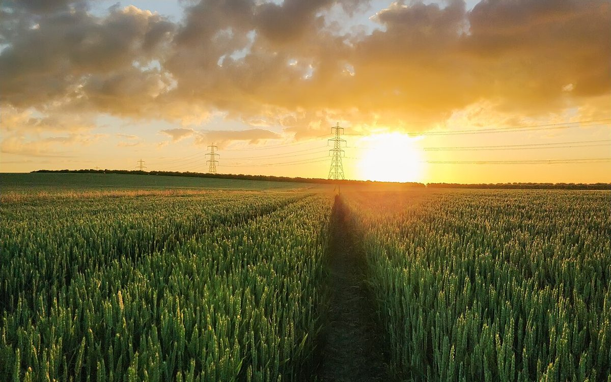
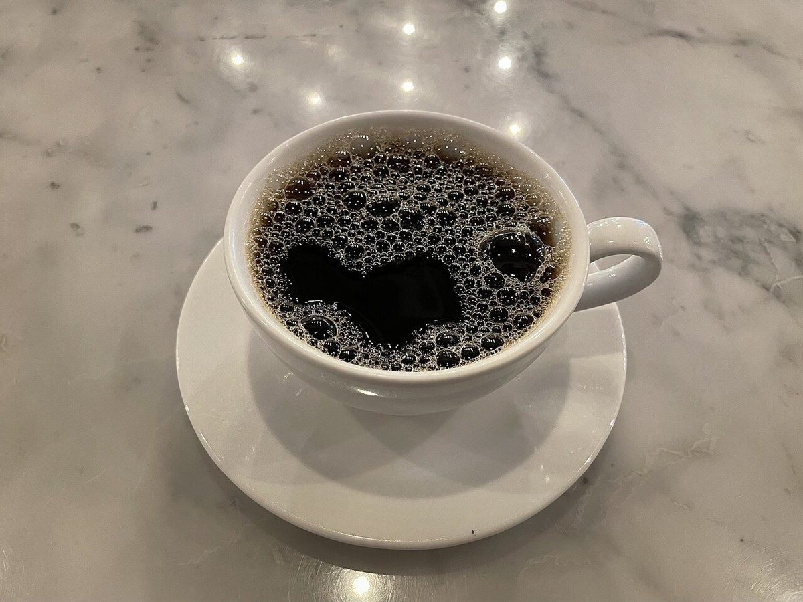

カフェ / 愛知県豊橋市
CAFE SAIROカフェ サイロ
愛知県豊橋市にあるカフェ「CAFE SAIRO」のご案内ページです。営業時間やメニューなど、詳しいことは準備中。まずはInstagramをのぞいてみてください。

制作側の連想
「サイロ」という響きから
店名の由来は分かりません。制作側は「SAIRO(サイロ)」という響きから、穀物や飼料をためておく円筒形の貯蔵塔を連想しました。タンクの横には、中身の残りを示す目盛りがあるものがあります。そこでこのサイトは、ページ左の細長い「残量計」を目盛りに見立て、満(F)から空(E)まで、ひとつずつ読み進める作りにしています。制作側の連想で、お店の理念・由来とは無関係です。
残量計を下りていく
満から空まで、5つの目盛り。
写真は豊橋市のものでも、お店のものでもありません。国外または撮影地不明のフリー素材を、目盛りの雰囲気に合わせて並べたイメージです。
- F満
実った穂
いっぱいに満ちたイメージ。

国外のイメージ(ドイツ) - 3/4四分の三
灰緑の粒
まだ焙られる前の姿のイメージ。

撮影地不明のイメージ - 1/2半分
茶色の粒
ちょうど半分、色づいたイメージ。

撮影地不明のイメージ - 1/4四分の一
白いカップ
残りわずか、手元に届いたイメージ。

撮影地不明のイメージ - E空
ひらいた空
空っぽになって、空が広がるイメージ。

国外のイメージ(米国)
ご案内
お店のこと(確認できたものだけ)
| 所在地 | 〒440-0014 愛知県豊橋市南牛川1丁目23-15 |
|---|---|
| 電話 | なし |
| 営業時間 | 準備中 |
| 定休日 | 準備中 |
| ご予約 | 準備中 |
| 駐車場 | 準備中 |
| SNS | Instagram @cafesairo |